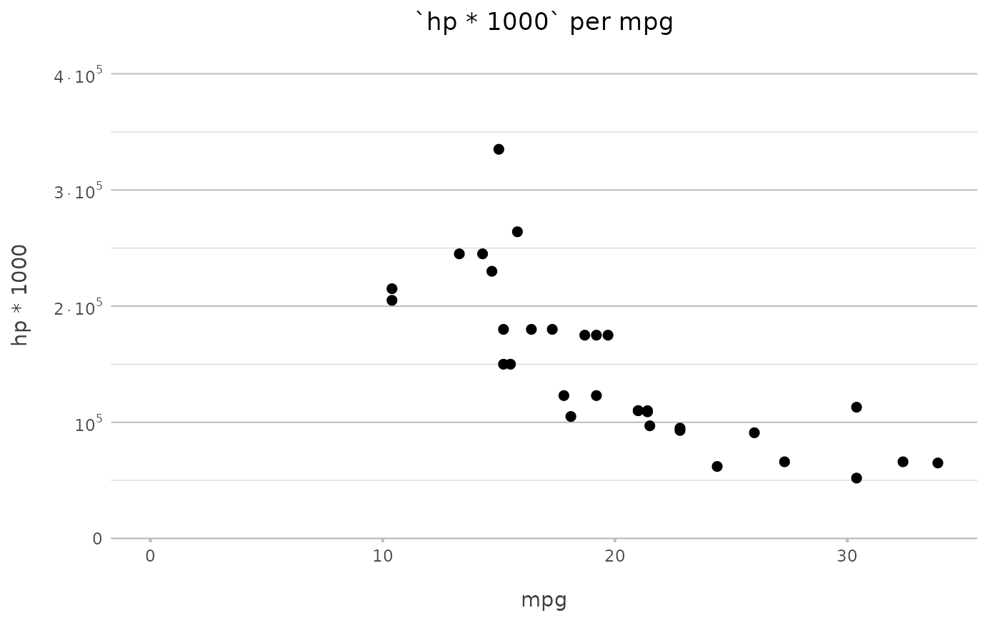

Formatting with readable format settings and Dutch defaults
format2(x, ...) # S3 method for default format2( x, format = "d mmmm yyyy", percent = FALSE, round = ifelse(percent, 1, 2), force.decimals = ifelse(percent, TRUE, FALSE), decimal.mark = ",", big.mark = ".", locale = "nl", ... ) # S3 method for percentage format2(x, round = NULL, decimal.mark = ",", big.mark = ".", ...) # S3 method for percent format2(...) # S3 method for POSIXct format2(x, format = "d mmmm yyyy", locale = "nl", ...) # S3 method for POSIXlt format2(x, format = "d mmmm yyyy", locale = "nl", ...) # S3 method for POSIXt format2(x, format = "HH:MM:SS", locale = "nl", ...) # S3 method for hms format2( x, format = "HH:MM:SS", round = 2, force.decimals = FALSE, decimal.mark = ",", big.mark = ".", ... ) # S3 method for difftime format2( x, round = 2, force.decimals = FALSE, decimal.mark = ",", big.mark = ".", ... ) # S3 method for Date format2(x, format = "d mmmm yyyy", locale = "nl", ...) # S3 method for numeric format2( x, round = ifelse(percent, 1, 2), force.decimals = ifelse(percent, TRUE, FALSE), decimal.mark = ",", big.mark = ".", min.length = 0, percent = FALSE, ... ) format2_scientific(x, decimal.mark = ",", ...)
| x | vector of values |
|---|---|
| ... | arguments given to methods such as |
| format | format to use, can be set with human-readable text such as |
| percent | logical to transform numeric to percentage (character) |
| round | number of decimals to round to |
| force.decimals | force printing decimals, even with trailing zeroes |
| decimal.mark, big.mark | decimal and thousands limiters |
| locale | language to set for dates |
| min.length | minimal length of output, overwrites |
The format2_scientific() function returns an expression and can be used in ggplot2 plots.
format2("2021-01-01")#> Warning: OS reports request to set locale to "NL_nl" cannot be honored#> [1] "1 January 2021"#> Warning: OS reports request to set locale to "NL_nl" cannot be honored#> [1] "18 October 2021 17:24"# content-aware of decimal use format2(1024)#> [1] "1.024"#> [1] "1.024,00" "0,12"format2(2.1)#> [1] "2,1"format2(2.1, force.decimals = TRUE) # since default is 2 decimals#> [1] "2,10"#> [1] "12,3%"# use format2_scientific for scientific labels in plots: # if (require("certeplot2")) { # plot2.point(mtcars, # y = hp * 1000, # y.labels = format2_scientific) # } if (require("ggplot2")) { ggplot(mtcars) + geom_point(aes(x = mpg, y = hp * 1000)) + scale_y_continuous(label = format2_scientific) }#>